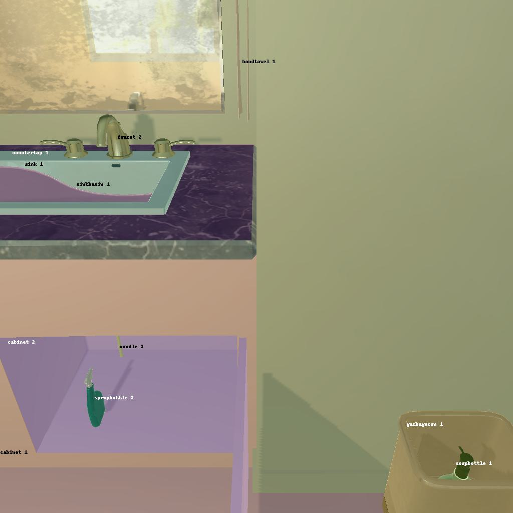

---------------------------------------------------------task: 11---------------------------------------------------------
--------------------------------------------------------------------------------------------------------------------------------------------------------------------
--------------------------------------------------------------------------------------------------------------------------------------------------------------------
Step:--------------------------------------------------------------------------9-------------------------------------------------------------------------------
----------------------------------------
VLM Prompt:
Image1:
**Instruction**
1. Analyze the provided image to identify all visible household objects, focusing on those relevant to the task description "put a clean soapbar in bathtubbasin."
2. Use the analysis of the image and the task hint "The agent must find an object of the desired type, pick it up, go to a sink or a basin, clean the object with a sink or basin, and then find the correct location to place it and put it down there. The agent does not need to use soap bottle or faucet to clean the object, and the agent just needs to do action that is "clean the object with the sink or sink basin"." to answer the question: what is the most reasonable action in the choices for the task description "put a clean soapbar in bathtubbasin"?
4. Decide and write the answer using the template: The answer is: (i): , where i is the real number. If there is no desired object in the image, search every place based on **Initial Observation** to find the object. And if no one is exactly correct, choose a similar answer.
**Initial Observation**
You are in the middle of a room. Looking quickly around you, you can see bathtub (1), bathtubbasin (1), toilet (1), cabinet (1-2), countertop (1), sink (1), sinkbasin (1), garbagecan (1)
**Answer Choices**
(1): go to bathtub 1
(2): go to bathtubbasin 1
(3): go to toilet 1
(4): go to countertop 1
(5): go to sink 1
(6): go to sinkbasin 1
(7): go to garbagecan 1
(8): open cabinet 2
(9): close cabinet 2
(10): take faucet 2 from cabinet 2
(11): take spraybottle 2 from cabinet 2
(12): take handtowel 1 from cabinet 2
(13): take soapbottle 1 from cabinet 2
(14): take candle 2 from cabinet 2
(15): examine cabinet 2
**Answer**
Let's think step by step by following the instructions.
----------------------------------------
----------------------------------------
Original Response:
The task is to put a clean soapbar in the bathtubbasin. The image does not show any soapbar, so we must search for it based on the initial observation. The most likely places to find a soapbar would be in the cabinets or on the countertop.
Since cabinet 1 is not visible in the image, we'll ignore that for now. Cabinet 2 is visible and closed, so it would make sense to open it and search for the soapbar. The countertop is visible but does not show any soapbar.
After finding the soapbar, the agent would need to go to the sink or sinkbasin to clean it, as per the task hint. Since the sink and sinkbasin are both visible in the image, this step can be done after acquiring the soapbar.
Therefore, the most reasonable first action would be to search for the soapbar inside cabinet 2.
The answer is: (8): open cabinet 2
----------------------------------------
----------------------------------------
>>> Refine Original VLM Response and Get Pure Action: open cabinet 2
----------------------------------------
-----------------------------------------------------------------
Running time: 20.765993356704712 seconds
Total Money: 3.5271700000000012
-----------------------------------------------------------------
-----------------------------------------------------------------
Text Observation:Nothing happens.
-----------------------------------------------------------------
UNSUCCEED